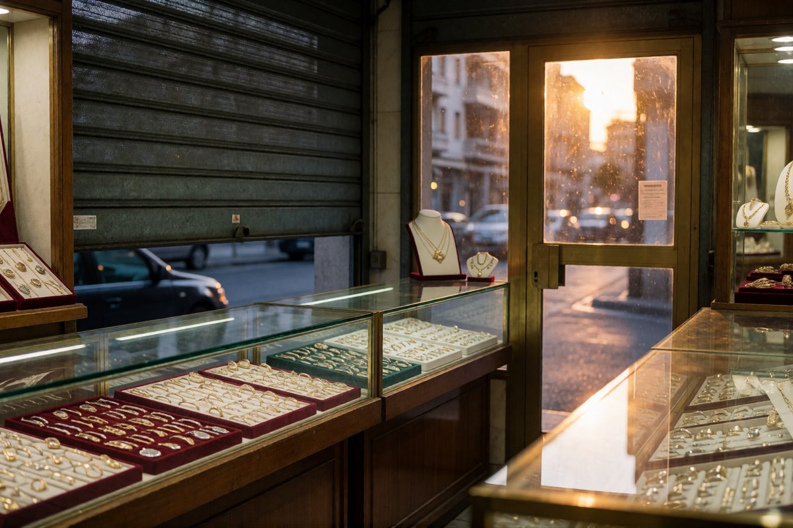

Cronaca · 17 novembre 2026
Caso Roggero, la Cassazione: fu una «deliberata aggressione»

Depositate le motivazioni della condanna definitiva al gioielliere di Grinzane Cavour: sparò quando la rapina era già finita. Sullo sfondo resta la richiesta di grazia al capo dello Stato.
di Franco Zanghì
Mario Roggero, il gioielliere condannato in via definitiva per aver ucciso due rapinatori, non si stava difendendo. Secondo la prima sezione penale della Corte di cassazione la sua fu «una deliberata aggressione», non giustificata dalla necessità della difesa. Le motivazioni della sentenza sono state depositate martedì 17 novembre.
La sentenza è quella del 15 luglio, che ha reso definitiva la condanna a 14 anni e 9 mesi. Il fatto risale al 28 aprile 2021, a Grinzane Cavour, in provincia di Cuneo. Verso le 18,45 tre uomini entrano nella gioielleria, minacciano Roggero, la moglie e la figlia con coltelli e con pistole che si scopriranno finte, svuotano la cassaforte e scappano. Roggero li inseguì fuori dal negozio e sparò: due rapinatori morirono, il terzo restò ferito.
Che cosa scrivono i giudici
Per la Corte non ci fu imprudenza, e nemmeno un errore nel valutare il pericolo. Roggero sparò «in un momento in cui la rapina era ormai conclusa», mentre i rapinatori stavano fuggendo e quando la minaccia per la moglie e per la figlia era già venuta meno. Colpi in rapida successione, ad altezza d'uomo, da breve distanza: per i giudici questo significa volontà di uccidere, e quindi niente omicidio colposo. La legittima difesa, vera o soltanto creduta, è esclusa.
C'è poi un passaggio che pesa. I giudici parlano del «proposito di farsi giustizia da sé» e ricordano che era stato lo stesso Roggero, nelle interviste dopo i fatti, a dire che sparare era l'unico modo per fermare i rapinatori. In primo grado la condanna era stata di 17 anni; in appello la pena è scesa a 14 anni e 9 mesi, con un anticipo di risarcimento ai familiari dei due uomini uccisi di 780.000 euro. A luglio, dopo la conferma della Cassazione, Roggero, che ha 72 anni, è entrato in carcere.
Il caso è anche politico
Da luglio la vicenda è diventata materia di scontro politico. Matteo Salvini ha chiesto pubblicamente la grazia, parlando di condanna ingiusta; Giorgia Meloni ha dichiarato di aver autorizzato il ministro della Giustizia Carlo Nordio ad avviare la pratica. Il ministro della Difesa Guido Crosetto ha scritto: «È stata applicata la legge? Probabilmente sì. È giusto? Per me no». Sergio Mattarella ha fatto sapere che la grazia è una prerogativa riservata al capo dello Stato, e in quei giorni ha convocato il ministro. A ottobre, dopo la grazia parziale concessa a un altro gioielliere, quello di Nicolosi in Sicilia, la Lega ha rinnovato l'appello anche per Roggero.
Il punto
I fatti descritti dai giudici sono duri: la rapina era finita, i rapinatori scappavano. La legittima difesa, anche dopo la riforma del 2019, protegge chi si difende, non chi insegue. Ma dietro le carte c'è un uomo di 72 anni che ha visto puntare un'arma contro sua moglie e sua figlia e che ha avuto pochi secondi per decidere. La grazia non smentisce i giudici: è un'altra cosa, è la clemenza dello Stato verso la persona. E spetta soltanto al Presidente della Repubblica.
Fonti
- ANSA, «La Cassazione: Roggero si è fatto giustizia da sé», 17 novembre 2026
- Il Fatto Quotidiano, «Deliberata aggressione ai rapinatori per farsi giustizia da sé», 17 novembre 2026
- La Voce di Alba, «Caso Roggero, depositate le motivazioni della Cassazione», 17 novembre 2026
- Il Post, ricostruzione del fatto del 28 aprile 2021, 15 luglio 2026
- Sky TG24, «Nordio avvia l'istruttoria per la grazia, Mattarella lo convoca», 16 luglio 2026
- LaPresse, «Meloni: ho autorizzato Nordio ad avviare la pratica di grazia», 19 luglio 2026
La grazia è una facoltà del Presidente della Repubblica: alla data di pubblicazione non era stata concessa e la richiesta risultava ancora all'esame.